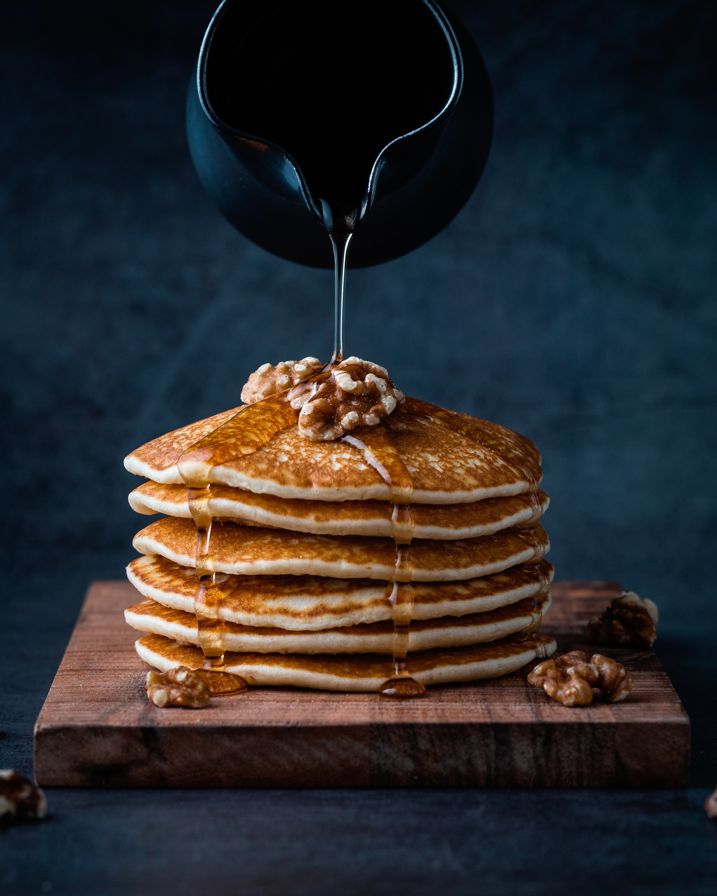

Home
Pancakes

Description
Pancakes are a soft and fluffy breakfast dish commonly served with sweet toppings such as honey, syrup, fruit, or nuts. They are made from a simple batter containing flour, milk, eggs, and butter.
These pancakes are topped with walnuts and honey, creating a sweet and rich flavor that makes them a popular breakfast and dessert choice.
Ingredients
- 200g flour
- 300ml milk
- 2 eggs
- 2 tbsp sugar
- 1 tsp baking powder
- 30g melted butter
- A pinch of salt
- Walnuts to taste
- Honey to taste
Steps
- In a bowl, mix the flour, sugar, baking powder, and salt.
- Add the milk, eggs, and melted butter, then whisk until the batter is smooth.
- Heat a lightly buttered pan over medium heat.
- Pour a small amount of batter into the pan and cook until bubbles appear on the surface.
- Flip the pancake and cook the other side until golden brown.
- Repeat the process with the remaining batter.
- Serve the pancakes with walnuts and honey on top.